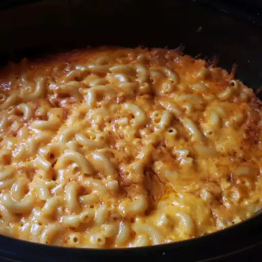

MAC AND CHEESE

Slow cooker Mac and Cheese
INGREDIENTS: Serves 12 portions
- 1 (16 ounce) package elbow macaroni
- ½ cup butter
- ground black pepper to taste
- 1 (16 ounce) package shredded Cheddar cheese, divided
- 1 (5 ounce) can evaporated milk
- 2 eggs, well beaten
- 2 cups whole milk
- 1 (10.5 ounce) can condensed Cheddar cheese soup (such as Campbell's®)
- 1 pinch paprika, or as desired (Optional)
step 1:
Fill a large pot with lightly salted water and bring to a rolling boil. Stir in macaroni and return to a boil. Cook pasta uncovered, stirring occasionally, until tender yet firm to the bite, about 8 minutes. Drain and transfer pasta to a slow cooker. step 2:
Add butter to pasta and stir until melted; season with salt and pepper. Sprinkle about 1/2 of the Cheddar cheese over pasta and stir.step 3:
Whisk evaporated milk and eggs together in a bowl until smooth; stir into pasta mixture. step 4:
Whisk milk and condensed soup together in a bowl until smooth; stir into pasta mixture.step 5:
Sprinkle remaining cheese over pasta mixture; garnish with paprika.step 6:
Cook on Low for 3 hours.step 7:
Serve hot and enjoy!
TIPS:
Some slow cookers take less time. Check the edges are not getting too brown after 2 1/2 hours.
To bake in a conventional oven, pour pasta mixture into a casserole dish and bake at 350 degrees F (175 degrees C) for 45 minutes to 1 hour.